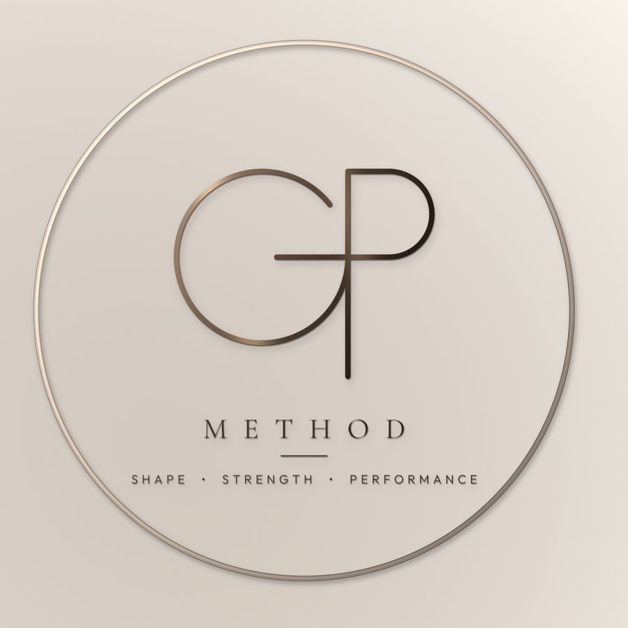

Online coaching
Giorgia PirasPersonal trainer a Roma
Non allenarti solo per cambiare il tuo corpo. Allenalo per renderlo forte, performante e capace.
Co-fondatrice di Weal House · Via Michele Amari 51, Roma

Non devi scegliere tra estetica e performance.
Il metodo
Lavoro mirato per costruire muscolo e migliorare le proporzioni, con warm-up specifici e i video degli esercizi per eseguirli bene.
Progressioni dalla Week 1 alla Week 6, con RPE e indicazioni sui carichi: sai sempre quanto spingere e quando aumentare.
Conditioning e linee guida cardio dentro la stessa programmazione, per allenare anche fiato e capacità di lavoro.
Ogni percorso parte da te.
Un ciclo di 6 settimane.
Livello, obiettivo, disponibilità, attrezzatura e capacità vengono valutati prima di costruire la programmazione.
I livelli


Dove nasce il metodo.
Chi sono5 su 5 su Google.
Le recensioni di Weal House, la palestra dove nasce GP METHOD.
Ti alleni con Giorgia? Lascia la tua recensione.
